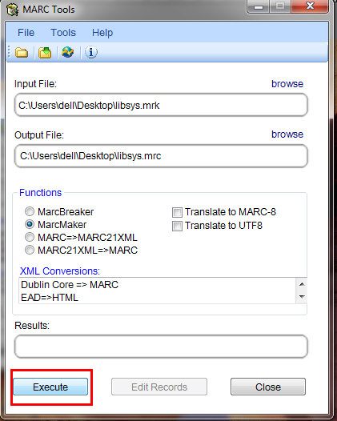
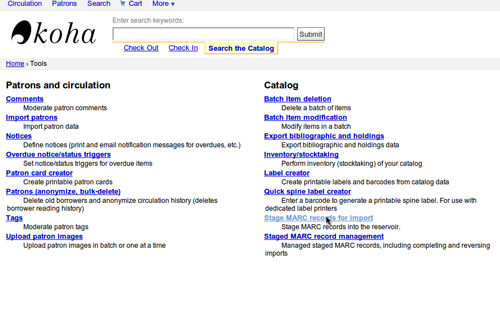
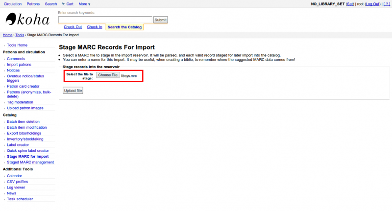
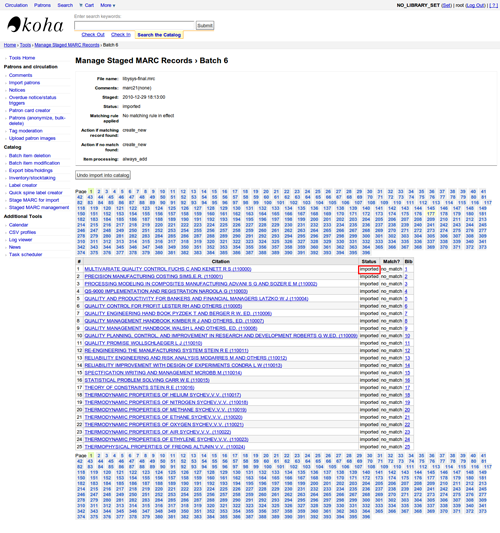

在 Koha 使用第三方軟體
MarcEdit
很多圖書館喜歡使用 MarcEdit 軟體修改與整理資料。該軟體可從此處下載：http://marcedit.reeset.net/
重要
本章內描述的內容可以在 Koha 內使用 Marc 編修模板 完成它，但此段內容係供 MarcEdit 使用。
新增索書號的首字
匯入資料前，您或許要先清理它。常用的方法是新增前置碼於索書號之前。
開啟 MarcEdit

點選 ‘MarcEditor’
進入工具 > 編輯分欄資料

在資料前置特殊字元：^b，在分欄前置資料時，祗需在欄位資料前加入 ^b 即可：將文字及資料附加在取代位置
取代字串時先在分欄加入前置資料，加入 ^b [欲取代的字串] 於資料欄位前。
將 Excel 資料匯入 Koha
假設您想要匯入已經存在的 Excel 格式記錄。該怎麼做呢？Koha 不讓您直接匯入 Excel 格式資料。以另個簡單的方案使 Koha 接收 Excel 資料。將 Excel 檔案轉換為 MARC 格式，就能夠匯入。
依照下列的步驟將 Excel 記錄匯入 Koha
將 Excel 格式轉換為 .mrk 格式
首先，將 Excel 格式轉換為 .mrk 格式。您將用到 MarcEdit 軟體。可從此處下載它 http://marcedit.reeset.net/
開啟它並選擇Add-ins–>刪除文字轉換器。

出現以下視窗時按下一步。

瀏覽您的 Excel 檔案。

依照 Excel 檔案格式 (*.xls) 選取您的 Excel 檔案。

同樣的，填入其他款目，如：匯出檔案、Excel 表單名稱並勾選 UTF-8 編碼 (必要時) 並點選下一步。

畫面提示您將欄位對映至標準的 MARC 格式欄位。
假設欄位 0 是第一欄，則鍵入對映至：022$a (連續性出版品的有效 ISSN) 再按取用。

說明
可以客製化指標及其他字串，MARC21 格式的詳情參見 :ref:`official library of congress site <http://www.loc.gov/marc/bibliographic/>`__。
對映其他欄位後再按完成。

將出現視窗告知已新增您的 MARC 文字檔 (*.mrk)。

按關閉此步驟把 .xls 檔案格式轉換為 .mrk 檔案格式。點兩下就能打開該檔案。
轉換 .mrk 格式為 .mrc
我們將轉換稍早新增的 .mrk 檔案為可以直接匯入 Koha 的 MRAC 檔案。
所以再開啟 MarcEdit 軟體並選擇 MARC 工具。

接著選取 MarcMaker 把 .mrk 檔案轉換為 .mrc 檔案。

選取您的匯入檔案並命名匯出檔案。再點選執行。

然後它將顯示結果。

按關閉，接著出現 MARC 記錄(.mrc)。
把 .mrc 匯入 Koha
More information on importing records into Koha can be found in the Stage MARC records for import section of this manual.
最後我們將把新增的 .mrc 檔案匯入 Koha。
點選館員介面的工具。

接著按待匯入的 MARC 記錄。

然後，選擇稍早新增的 .mrc 檔案並按上傳。

您可新增檔案的評論然後再點選匯入待處理。

匯入完成後，您將得到如下的結果

然後，點選管理待匯入記錄。
您可從這裡改變對映規則。

做好後，點選匯入此批次目錄。
做好後。匯入所有的記錄後，按狀態後將顯示 “已匯入”

您可取消匯入作業。
幾分鐘後，您就已匯入 10,000 筆左右的記錄
OCLC Connexion Gateway
Koha 可以和 OCLC Connextion Gateway 相容。此舉容許圖書館使用 OCLC Connextion 做為其編目工具並以單鍵送出此等記錄給 Koha。以下指示有助於您設定 OCLC Connextion Gateway，若您是系統管理者就可參照使用它。
在 Koha 設定 OCLC 的服務
首先，需在系統的某個地方新增組態資訊的檔案。可以放在帳號可及且可執行服務的地方。
此檔案有11列。前6列有關您的 Koha 系統：
host: The IP address of your Koha server
port: The port you want to use for the Connexion service. This port must be different from your SIP port, or any other service
koha: The full URL of your staff client
log: The location (full file specification) of your log for the service
user: The default Koha username to use for importing
password: The password that goes with that username
其他幾列描述管理的方式：
match: The name of the matching rule from your system to use
overlay_action: "replace", "create_new", or "ignore"-- what to do if there is a match
nomatch_action: "create_new" or "ignore"-- what to do if there is no match
item_action: "always_add","add_only_for_matches","add_only_for_new", or "ignore" -- what to do with embedded 952 item data
import_mode: "direct" or "stage"
範例如下：
host: 1.2.3.4
port: 8000
log: /home/koha/koha-dev/var/log/connexion.log
koha: http://kohastaff.myuniversity.edu
user: koha_generic_staff
password: password
match: 001
overlay_action: replace
nomatch_action: create_new
item_action: ignore
import_mode: direct
使用 “直接” 就是選擇 ‘import_mode’，則把待處理記錄立即匯入 Koha，且在索引建立後就可搜尋。若選擇 “待處理”，則記錄置於待處理批次，直至選取 管理待處理 MARC 記錄 時，才處理它。
匯入多筆記錄時，他們將在同一個批次，直到該筆批次匯入完畢，才產生新的指次。
在 “直接” 模式，每筆記錄將在其自己的批次內。
執行下列程式，啟動服務：
/location/of/connexion/import/daemon/connexion_import_daemon.pl -d -c /location/of/config/file.cnf
設定您的 OCLC 桌面客戶
說明
取自 OCLC Connexion Client v.2.50, Koha v.3.12 的畫面
設定 OCLC Connexion 桌面客戶連結 Koha，至 工具 > 選項，再選取匯出分頁。

點選 “新增…” 鈕以設定新的目的地，再選取 “OCLC Gateway Export” 及按 OK。
完成後點選 “OK”，接著可以到新增 “Gateway 匯出” 選項清單(以下的畫面不顯示目錄的IP網址及埠號)
新增 Gateway 匯出
點選 “記錄特性” 並確認書目記錄使用 MARC21、UTF-8 Unicode 編碼，並點選 OK 以儲存它。
記錄特性
您應已準備妥當！從 OCLC Connexion 的 Koha 客戶匯出記錄，記錄出現在螢幕時，祗需要 F5 鍵即可。彈出匯出對話盒，您將看到 Connexion 與 Koha 的對話。注意記錄已新增或覆寫的訊息，包括書目號與網址以備查檢該記錄之用。
使用 OCLC Connexion Gateway
可以從 Connexion 批次或逐筆匯出記錄。
逐筆匯出記錄
逐筆匯出書目記錄時，確認您的 “批次” 選項的正確性：從 “工具” 選單裡，選取 “選項”，再選 “批次” 分頁。在 “於批次執行在地作業” 區塊，不要勾選 “匯出書目記錄”

準備匯出時，從 “行動” 選單，選擇 “匯出” 或使用 F5 鍵。若匯出成功或新增至目錄時可看到類似的畫面；您可複製 & 貼上結果網址於您的 Koha 目錄就可看到新增的記錄。
若覆寫記錄，您將看到 “OCLC Gateway Export Status” 視窗顯示的訊息
批次匯出記錄
批次匯出書目記錄時，確認您的 “批次” 選項的正確性：從 “工具” 選單裡，選取 “選項”，再選 “批次” 分頁。在 “於批次執行在地作業” 區塊，勾選 “匯出書目紀錄”
準備匯出單筆記錄時，從 “行動” 選單，選取 “匯出” 或按 F5 鍵，其匯出狀態將是 “備便。”
準備批次匯出記錄時，從 “批次” 選單，選取 “批次程序” 並選取適當的 “路徑” 與 “匯出” 盒

即將開始匯出，書目記錄將逐筆匯出 & 匯入 Koha；您可在 “OCLC Gateway 匯出狀態” 視窗，如前所述，看到每個記錄的匯出。必須選取 “關閉”，該視窗才會關閉並開始下筆記錄的匯出/匯入作業。此過程持續不斷直到完成批次內所有的記錄。然後您可見到或看不到 Connexion 客戶匯出報表(視您的客戶選項而定)。
OCLC 內的館藏
為每個館藏新增 952 欄就能把館藏記錄加入 OCLC。 位置和館藏訊息 將分析 952 的分欄，至少應使用到分欄 2、a、b、與 y。
952 \\$2CLASSIFICATION$aHOMEBRANCHCODE$bHOLDINGBRANCHCODE$yITEMTYPECODE
分欄 2 是分類法代碼。可以用 ddc 代表杜威分類法或 lcc 代表美國國會圖書館分類法或 z 代表客製化的分類法。其他的分類法來源在管理區塊的 分類法來源
分欄 a 是您所屬圖書館的代碼，不是名稱。代碼可在管理區塊的 圖書館 找到。
分欄 b 是您館藏圖書館的代碼，不是名稱。代碼可在管理區塊的 圖書館 找到。
分欄 y 是您館藏類型的代碼。必須是代碼，不是名稱。代碼可在管理區塊的 館藏類型 找到。
952 \\$2ddc$aMAIN$bMAIN$yBOOK
在這些必備欄位之外您可輸入其他任何的欄位。大部份圖書館在分欄 o 輸入索書號在分欄 p 鍵入條碼號。在 位置和館藏訊息 檢視完整分欄及其值。
Talking Tech
Talking Tech i-tiva is a third party, proprietary, product that libraries can subscribe to. Learn more here: http://www.talkingtech.com/solutions/library.
Installation and setup instructions
確認您已執行 installer/data/mysql/atomicupdate/Bug-4246-Talking-Tech-itiva-phone-notifications.pl，安裝必備的資料包(新增 syspref，通知 placeholders 與 messaging transport 偏好)
To use, TalkingTechItivaPhoneNotification system preference must be turned on.
If you wish to process PREOVERDUE or RESERVES messages, you’ll need the EnhancedMessagingPreferences system preference turned on, and patrons to have filled in a preference for receiving these notices by phone.
對於 OVERDUE，必須在 更多 > 工具 > 啟動逾期通知 下的組態逾期通知。可以使用個別分館的啟動方式，或預設階段的啟動 (選擇適宜的腳本)。
Sending notices file
新增 TalkingTech_itiva_outbound.pl 腳本至您的排程
Add an FTP/SFTP or other transport method to send the output file to the i-tiva server
若您需要，可以在送出之後於另個資料夾典藏送出的通知檔
執行 TalkingTech_itiva_outbound.pl –help 指令取得更多資訊
Receiving results file
新增 FTP/SFTP 或其他傳輸方法，將結果檔案送至您 Koha 伺服器內已知的資料夾
新增 TalkingTech_itiva_inbound.pl 腳本於您的排程後，針對於該資料夾
若您願意，可以在處理後於其他資料夾儲存結果檔案
執行 TalkingTech_itiva_inbound.pl –help 指令取得更多資訊